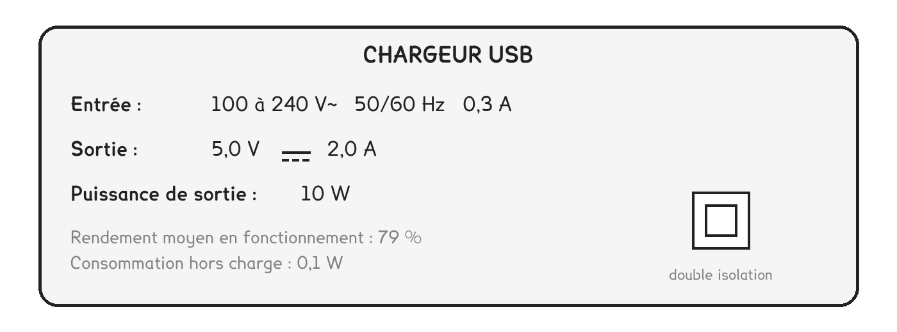
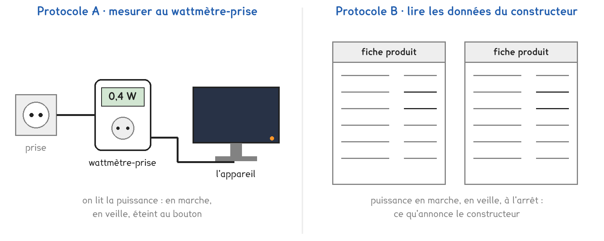

1re ou Tle Bac Pro · toutes spécialités · TP commun CT-13
Que consomment les appareils qu'on croit éteints, et combien cela coûte-t-il sur une année ?
2 figures
Sujet. Il est minuit, tout est éteint dans l’appartement. Pourtant, le compteur électrique continue de tourner. La box, la télévision, les chargeurs : quelque chose consomme encore.
Problématique : que consomment les appareils qu’on croit éteints, et combien cela coûte-t-il sur une année ?
Au laboratoire, on étudie quatre appareils du lycée : un écran d’ordinateur, un ordinateur portable, un chargeur de téléphone et un vidéoprojecteur.
a) Compléter le tableau des trois grandeurs du TP.
| La grandeur | Son symbole | Son unité usuelle | Ce qui la mesure ou la donne |
|---|---|---|---|
| la puissance | P | ……………… | le wattmètre-prise |
| la durée | t | l’heure, h | ……………………………… |
| l’énergie | E | ……………… | le compteur, la facture |
Voici la plaque d’un chargeur de téléphone, collée sur son boîtier.

b) Relever la puissance de sortie, puis ce que consomme le chargeur seul.
Puissance de sortie : ……………… · consommation branché sans téléphone : ………………
c) Convertir. Le premier est fait. On rappelle que 1 kWh = 1 000 Wh.
| 1 jour = 24 h | 1 an = ……………… h | 500 Wh = ……………… kWh |
|---|---|---|
| 2 W pendant 10 h = 20 Wh | 0,5 W pendant 1 000 h = ……… Wh | 5 W pendant 1 an = ……… kWh |
Deux protocoles répondent à la même question. Une partie de la classe prend A, l’autre prend B, et on compare à la fin.

Protocole A · mesurer. Un wattmètre-prise se branche entre la prise et l’appareil. Il affiche la puissance que l’appareil reçoit vraiment, en marche, en veille et éteint.
Protocole B · lire. Le constructeur indique, dans la fiche de chaque appareil, sa puissance en marche, en veille et à l’arrêt. On lit, puis on calcule.
d) Compléter le tableau pour comparer les deux protocoles.
| Protocole A | Protocole B | |
|---|---|---|
| D’où vient la puissance | …………………………… | …………………………… |
| Il faut l’appareil sous la main | oui · non | oui · non |
| On peut lui faire confiance sous 1 W | oui · non · à vérifier | oui · non · à vérifier |
Le choix se fait maintenant, avant de toucher au matériel.
e) Quel protocole prenez-vous ? Justifier en une phrase.
Je prends le protocole ……… parce que ……………………………………………………………………
f) Avant de mesurer : lequel des quatre appareils coûte le plus en veille ?
écran · ordinateur portable · chargeur · vidéoprojecteur
Avant de commencer
Un seul appareil par wattmètre-prise, jamais de multiprise en cascade.
Mains sèches, on ne branche que des appareils et des câbles en bon état.
On débranche l’appareil du wattmètre avant d’en changer.
Document 1 · Fiches produits types, puissances indiquées par le constructeur.
| L’appareil | En marche | En veille | Éteint au bouton |
|---|---|---|---|
| Écran d’ordinateur, 24 pouces | 18 W | 0,3 W | 0,3 W |
| Ordinateur portable, chargeur branché | 25 W | 1,2 W | 0,4 W |
| Chargeur de téléphone, sans téléphone | 0,1 W | ||
| Vidéoprojecteur | 230 W | 0,5 W | 0,5 W |
Une consigne de schéma, avant les mesures.
g) Schématiser la chaîne : prise, wattmètre-prise, appareil. Flécher l’énergie.
Le schéma se dessine sur la feuille du TP.
h) Relever les puissances, en watts, pour votre protocole.
| L’appareil | En marche (W) | En veille (W) | Éteint au bouton (W) |
|---|---|---|---|
| Écran d’ordinateur | |||
| Ordinateur portable | |||
| Chargeur de téléphone | |||
| Vidéoprojecteur |
Chaque appareil reste en veille 20 h par jour, soit 7 300 h par an. Le kilowattheure coûte 0,20 €.
i) Calculer, pour chaque appareil, l’énergie de veille sur un an et son coût.
| L’appareil | E = P × t (kWh par an) | Coût par an (€) |
|---|---|---|
| Écran d’ordinateur | ||
| Ordinateur portable | ||
| Chargeur de téléphone | ||
| Vidéoprojecteur |
j) Votre réponse à la question f est-elle confirmée ? Comparer avec un groupe qui a pris l’autre protocole : trouve-t-il les mêmes valeurs en veille ?
k) Un foyer compte 15 à 50 appareils en veille, d’après l’ADEME. On suppose 2 W chacun, toute l’année. Encadrer ce que coûte la veille d’un foyer.
Entre ……………… € et ……………… € par an.
l) Répondre à la problématique en deux phrases, et proposer un geste qui la réduit.
Ce que ce TP a établi, et qui vaut pour tout appareil :
À RETENIR
L’énergie consommée est le produit de la puissance par la durée : E = P × t. Avec P en watts et t en heures, E est en wattheures ; la facture compte en kilowattheures.
Une petite puissance permanente coûte autant qu’une grande puissance utilisée peu de temps, parce que la veille se paie toute l’année. Une multiprise à interrupteur la supprime.
Une heure de vidéo en haute définition fait transiter environ 3 Go de données. Le réseau dépense environ 0,02 kWh par Go par la fibre ou l’ADSL, et 0,14 kWh par Go par le réseau mobile, d’après l’Arcep. Un kilowattheure produit en France émet environ 57 g de CO₂.
| Pour une heure de vidéo | Énergie du réseau (kWh) | CO₂ émis (g) |
|---|---|---|
| en Wi-Fi, par la box | ||
| en 4G, par le réseau mobile |
Pourquoi conseille-t-on de regarder ses vidéos en Wi-Fi plutôt qu’en 4G ?
TP commun de physique-chimie, toutes spécialités. Le travail se fait sur la feuille du TP : cette page en est la version à l'écran, sans les lignes à remplir. Rien n'est enregistré.